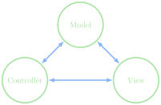

Tis an Enigma
Jed Rembold
April 6, 2026
Starting the Final Stretch!
- Scan the QR code or go to https://tools.jedrembold.prof/daily
- Fun group question: Have you encrypted things before? What sort of cipher did you use?

Quick Announcements
- I’m going to try for Midterm 2 feedback to you by Friday, but more realistically it will probably be a week from today
- I will see about getting grade reports sent out tomorrow though that include PSets 4 & 5 and Breakout
- Enigma guide goes out later tonight
- You essentially have two weeks for this one. Use the time wisely!
Daily LO’s
- How are the parts of an Enigma machine connected?
- How do the rotors work, and how does changing a rotor change the wiring connections?
- How can we encrypt and decrypt messages with an Enigma Machine?
Group Problems
Building the Machine
- To get us going, we are going to construct simple paper versions of
the Enigma Machine!
- All groups should have 1-2 templates
- Cut out the 4 “parts”, and carefully tape them as indicated to create a tube and three rings
- The rings should be able to fit around the tube, but should fit snuggly
Fixed Rotors
- Slide the rotors onto the tube so that they are in ascending numerical order from left to right
- Position all rotors so that the left “A” line aligns with the tube
“A” line
- We’ll call this the AAA rotor position
- Now, DO NOT SHIFT THE ROTORS
- One cool attribute about the Enigma machine is that it is symmetric: you use it the same way for both encryption and decryption.
- Decrypt my secret message to you:
EBUMJUF
Rotating Rotors
- In practice though, the fast rotor moves up one position before each signal is passed through
- Decided on a starting rotor configuration, making them all different
- So each rotor should start with a different left letter on the bold “A” line
- Write it down!
- Now, decide on a one-word message you want to encrypt. Make it at least 5 letters!
- Work out and write down what the encrypted message would be
- Keep in mind that:
- Rotors advance up the alphabet (so turn away from you) before you trace the signal through
- If one rotor moves from Z back to A, you also need to advance the rotor to the left of that rotor by one
The Great Decryption!
- I’m going to collect and redistribute all the secret messages
- Given the starting rotor positions and the message, can you decrypt the message?
Milestones
Project 4 Milestones
- Project 4 has slightly more milestones than past projects, but each
is still meant to give you a testable aspect of the program that you can
bite off one piece at a time
- Milestone 0: Activate the keyboard when pressed
- Milestone 1: Connect the keys directly to the lamps (no encryption)
- Milestone 2: Design and implement rotors
- Milestone 3: Implement one stage in the encryption (through 1 rotor)
- Milestone 4: Implement the full encryption path
- Milestone 5: Make the rotors advance properly each key press
- Web examples exist for helping you test each step of the process, linked here and in the guide.
Model-Controller-View
- The Enigma project is designed using the common model, controller, view paradigm
- Breaks an interactive program up into 3 pieces:
- The controller: the piece that deals with user input
- The view: the piece that handles graphical output
- The model: the piece that controls what should be happening at any given time

Modeling
- In the Enigma project, the view and the controller are handled for
you
- Both are actually handled in the same module
- Both export various methods that you can use to get input or interact with them from within the model
- You are responsible for writing the code that comprises the model
- There is also a constants module, where all of the various constants that you may need are stored
Extras!
Enigma Rotors

|